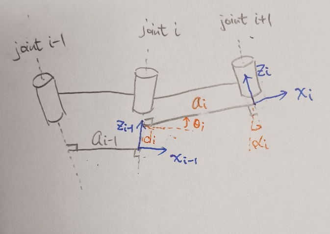
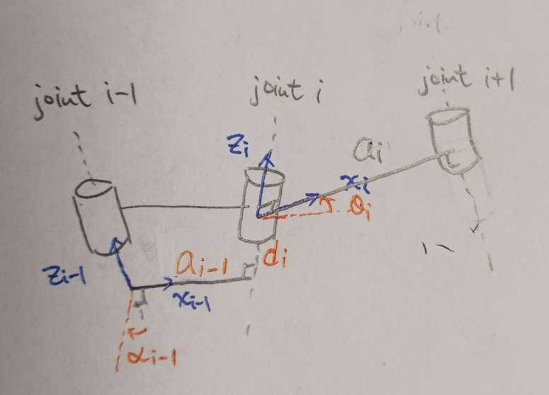
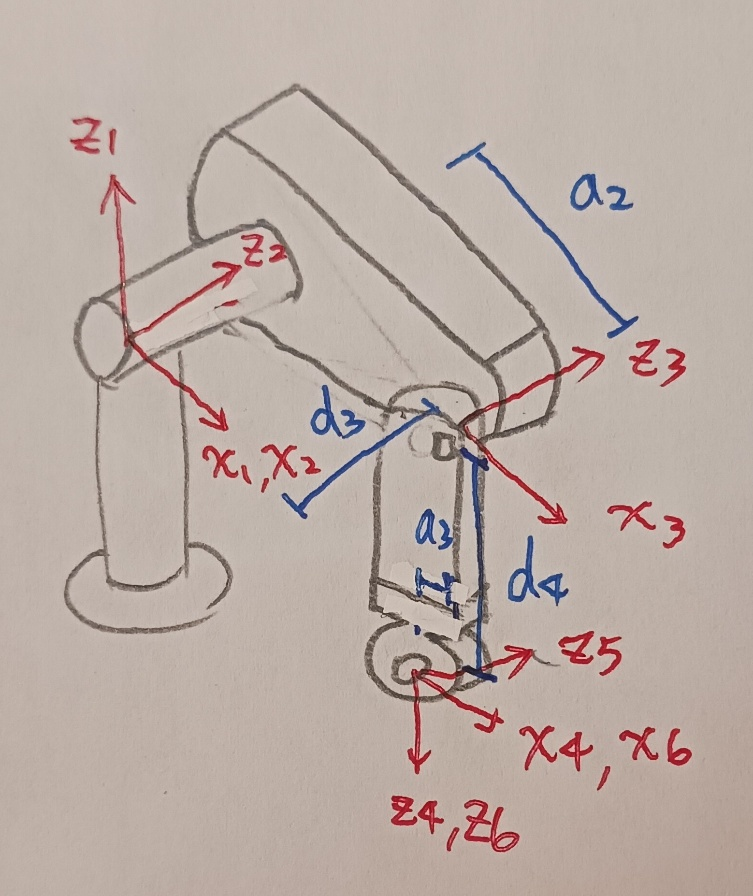
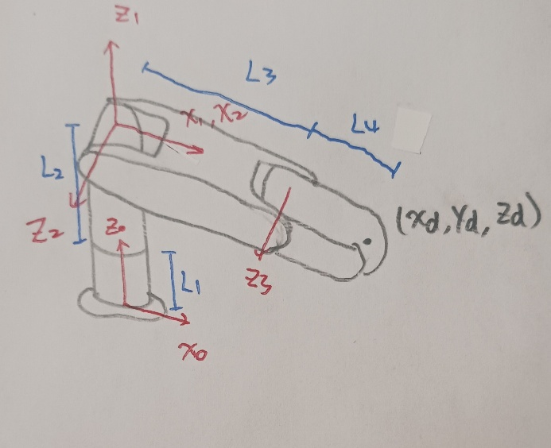
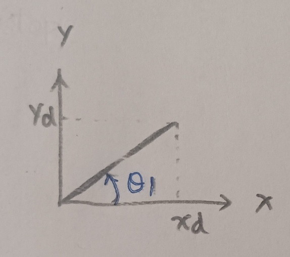
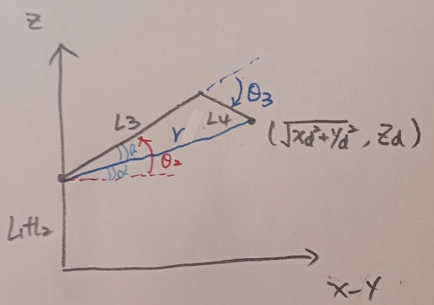
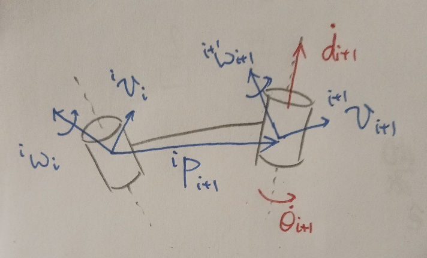
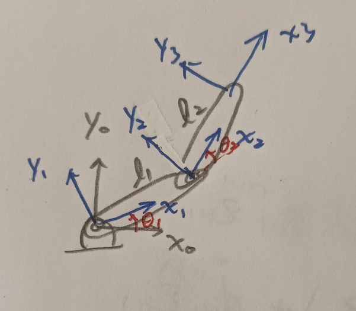
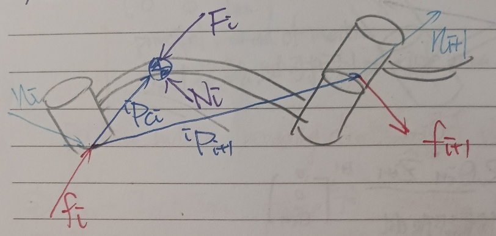

Introduction
Welcome. I'm Ting-Hao Liu. Replace this paragraph with a short bio: your background, current role or degree program, and the areas you focus on (robotics, control, machine learning, etc.).
You can also add a profile photo, contact links (email, LinkedIn, GitHub), and a short list of highlights or skills here.
Expertise — Robotics
Forward Kinematics
Forward kinematics maps a robot's joint-frame coordinates to a 3D Cartesian coordinate. A 4×4 homogeneous transformation matrix represents the rotation and translation between consecutive frames.
A. Denavit–Hartenberg Parameters

There are 4 steps to move from the frame of joint \(i - 1\) to joint \(i\):
Translate along \(z\)-axis on joint \(i\) with \(d_{i}\) to the intersection of the common normal between joint \(i\) and joint \(i + 1\).
Revolve along \(z\)-axis on joint \(i\) with \(\theta_{i}\) to match \(x\)-axis with the common normal.
Translate along \(x\)-axis with \(a_{i}\) onto joint \(i + 1\).
Revolve along \(x\)-axis with \(\alpha_{i}\) to align \(z\)-axis to joint \(i + 1\).
The transformation matrix becomes
\[{_{i}^{i - 1}\mkern1.5muT = \begin{bmatrix} 1 & 0 & 0 & 0 \\ 0 & 1 & 0 & 0 \\ 0 & 0 & 1 & d_{i} \\ 0 & 0 & 0 & 1 \end{bmatrix}\begin{bmatrix} \cos\left( \theta_{i} \right) & - \sin\left( \theta_{i} \right) & 0 & 0 \\ \sin\left( \theta_{i} \right) & \cos\left( \theta_{i} \right) & 0 & 0 \\ 0 & 0 & 1 & 0 \\ 0 & 0 & 0 & 1 \end{bmatrix}\begin{bmatrix} 1 & 0 & 0 & a_{i} \\ 0 & 1 & 0 & 0 \\ 0 & 0 & 1 & 0 \\ 0 & 0 & 0 & 1 \end{bmatrix}\begin{bmatrix} 1 & 0 & 0 & 0 \\ 0 & \cos\left( \alpha_{i} \right) & - \sin\left( \alpha_{i} \right) & 0 \\ 0 & \sin\left( \alpha_{i} \right) & \cos\left( \alpha_{i} \right) & 0 \\ 0 & 0 & 0 & 1 \end{bmatrix} }\begin{array}{r} = \begin{bmatrix} \cos\left( \theta_{i} \right) & - \sin\left( \theta_{i} \right)\cos\left( \alpha_{i} \right) & \sin\left( \theta_{i} \right)\sin\left( \alpha_{i} \right) & a_{i}\cos\left( \theta_{i} \right) \\ \sin\left( \theta_{i} \right) & \cos\left( \theta_{i} \right)\cos\left( \alpha_{i} \right) & - \cos\left( \theta_{i} \right)\sin\left( \alpha_{i} \right) & a_{i}\sin\left( \theta_{i} \right) \\ 0 & \sin\left( \alpha_{i} \right) & \cos\left( \alpha_{i} \right) & d_{i} \\ 0 & 0 & 0 & 1 \end{bmatrix} \end{array}\](1)
B. Modified Denavit–Hartenberg Parameters

There are 4 steps to move from the frame of joint \(i - 1\) to joint \(i\):
Revolve along \(x\)-axis on joint \(i - 1\) with \(\alpha_{i - 1}\) to align \(z\)-axis to joint \(i\).
Translate along \(x\)-axis, which is the common normal between joint \(i - 1\) and joint \(i\), with \(a_{i - 1}\) onto joint \(i\).
Translate along \(z\)-axis on joint \(i\) with \(d_{i}\) to the intersection of the common normal between joint \(i\) and joint \(i + 1\).
Revolve along \(z\)-axis on joint \(i\) with \(\theta_{i}\) to match \(x\)-axis with the common normal.
The transformation matrix becomes
\[\begin{array}{r} _{i}^{i - 1}\mkern1.5muT = \begin{bmatrix} 1 & 0 & 0 & 0 \\ 0 & \cos\left( \alpha_{i - 1} \right) & - \sin\left( \alpha_{i - 1} \right) & 0 \\ 0 & \sin\left( \alpha_{i - 1} \right) & \cos\left( \alpha_{i - 1} \right) & 0 \\ 0 & 0 & 0 & 1 \end{bmatrix}\begin{bmatrix} 1 & 0 & 0 & a_{i - 1} \\ 0 & 1 & 0 & 0 \\ 0 & 0 & 1 & 0 \\ 0 & 0 & 0 & 1 \end{bmatrix}\begin{bmatrix} 1 & 0 & 0 & 0 \\ 0 & 1 & 0 & 0 \\ 0 & 0 & 1 & d_{i} \\ 0 & 0 & 0 & 1 \end{bmatrix}\begin{bmatrix} \cos\left( \theta_{i} \right) & - \sin\left( \theta_{i} \right) & 0 & 0 \\ \sin\left( \theta_{i} \right) & \cos\left( \theta_{i} \right) & 0 & 0 \\ 0 & 0 & 1 & 0 \\ 0 & 0 & 0 & 1 \end{bmatrix} \\ = \begin{bmatrix} \cos\left( \theta_{i} \right) & - \sin\left( \theta_{i} \right) & 0 & a_{i - 1} \\ \cos\left( \alpha_{i - 1} \right)\sin\left( \theta_{i} \right) & \cos\left( \alpha_{i - 1} \right)\cos\left( \theta_{i} \right) & - \sin\left( \alpha_{i - 1} \right) & - d_{i}\sin\left( \alpha_{i - 1} \right) \\ \sin\left( \alpha_{i - 1} \right)\sin\left( \theta_{i} \right) & \sin\left( \alpha_{i - 1} \right)\cos\left( \theta_{i} \right) & \cos\left( \alpha_{i - 1} \right) & d_{i}\cos\left( \alpha_{i - 1} \right) \\ 0 & 0 & 0 & 1 \end{bmatrix} \end{array}\](2)
Example: (PUMA 560)

Step 1: Define all joints on the z-axis, and define x-axis according to the robot geometry.
Step 2: Construct the DH table.
| Joint | \[\alpha_{i - 1}\] | \[a_{i - 1}\] | \[d_{i}\] | \[\theta_{i}\] |
|---|---|---|---|---|
| 1 | \[0\] | \[0\] | \[0\] | \[\theta_{1}\] |
| 2 | \[- 90{^\circ}\] | \[0\] | \[0\] | \[\theta_{2}\] |
| 3 | \[0\] | \[a_{2}\] | \[d_{3}\] | \[\theta_{3}\] |
| 4 | \[- 90{^\circ}\] | \[a_{3}\] | \[d_{4}\] | \[\theta_{4}\] |
| 5 | \[90{^\circ}\] | \[0\] | \[0\] | \[\theta_{5}\] |
| 6 | \[- 90{^\circ}\] | \[0\] | \[0\] | \[\theta_{6}\] |
Step 3: Calculate the transform matrix: \(\mkern-3mu_{6}^{0}\mkern1.5muT =\mkern-3mu_{1}^{0}\mkern1.5muT_{2}^{1}T_{3}^{2}T_{4}^{3}T_{5}^{4}T_{6}^{5}T\)
\[\begin{array}{r} _{6}^{0}\mkern1.5muT = \begin{bmatrix} r_{11} & r_{12} & r_{13} & p_{x} \\ r_{21} & r_{22} & r_{23} & p_{y} \\ r_{31} & r_{32} & r_{33} & p_{z} \\ 0 & 0 & 0 & 1 \end{bmatrix} \end{array}\](3)
\[p_{x} = c_{1}\left( a_{2}c_{2} + a_{3}c_{23} - d_{4}s_{23} \right) - d_{3}s_{1}\]
\[p_{y} = s_{1}\left( a_{2}c_{2} + a_{3}c_{23} - d_{4}s_{23} \right) + d_{3}c_{1}\]
\[p_{z} = - a_{3}s_{23} - a_{2}s_{2} - d_{4}c_{23}\]
\[c_{1} = \cos\left( \theta_{1} \right),\ s_{1} = \sin\left( \theta_{1} \right)\]
Inverse Kinematics
Inverse kinematics maps a desired end-effector position in Cartesian coordinates to the corresponding robot joint angles, so that the joint commands needed to reach a target pose can be computed directly.
A. Geometric Solution
Decompose the spatial geometry into a set of planar sub-problems.
Example: (RRR manipulator)

From the top view, the joint 1 angle \(\theta_{1}\) can be calculated with desired position \(\left( x_{d},y_{d},z_{d} \right)\). From the side view, the joint 2 and 3 angles \(\theta_{2}\), \(\theta_{3}\) can be calculated:


\[\begin{array}{r} \theta_{1} = atan2\left( y_{d},x_{d} \right) \end{array}\](4)
\[r = \sqrt{x_{d}^{2} + y_{d}^{2} + \left( z_{d} - L_{1} - L_{2} \right)^{2}}\]
\[\cos\left( \theta_{3} \right) = \dfrac{r^{2} - L_{3}^{2} - L_{4}^{2}}{2L_{3}L_{4}}\]
\[\sin\left( \theta_{3} \right) = \pm \sqrt{1 - \cos^{2}\left( \theta_{3} \right)}\]
\[\begin{array}{r} \theta_{3} = atan2\left( \pm \sqrt{1 - \cos^{2}\left( \theta_{3} \right)},\cos\left( \theta_{3} \right) \right) \end{array}\](5)
\[\cos(\beta) = \dfrac{L_{4}^{2} - r^{2} - L_{3}^{2}}{2rL_{3}}\]
\[\sin(\beta) = \pm \sqrt{1 - \cos^{2}(\beta)}\]
\[\begin{array}{r} \theta_{2} = \alpha + \beta = atan2\left( z_{d} - L_{1} - L_{2},\sqrt{x_{d}^{2} + y_{d}^{2}} \right) + atan2\left( \pm \sqrt{1 - \cos^{2}(\beta)},\cos(\beta) \right) \end{array}\](6)
B. Algebraic Solution (Pieper's Method)
Example: (PUMA 560)
Consider the forward kinematics \(\mkern-3mu_{6}^{0}\mkern1.5muT = \begin{bmatrix} r_{11} & r_{12} & r_{13} & p_{x} \\ r_{21} & r_{22} & r_{23} & p_{y} \\ r_{31} & r_{32} & r_{33} & p_{z} \\ 0 & 0 & 0 & 1 \end{bmatrix}\)
The forward kinematics from joint 1 is then:
\[{{_{}^{1}\mkern1.5muT}_{6} = \begin{bmatrix} c_{1} & s_{1} & 0 & 0 \\ - s_{1} & c_{1} & 0 & 0 \\ 0 & 0 & 1 & 0 \\ 0 & 0 & 0 & 1 \end{bmatrix}\begin{bmatrix} r_{11} & r_{12} & r_{13} & p_{x} \\ r_{21} & r_{22} & r_{23} & p_{y} \\ r_{31} & r_{32} & r_{33} & p_{z} \\ 0 & 0 & 0 & 1 \end{bmatrix} }\begin{array}{r} = \begin{bmatrix} * & * & * & a_{2}c_{2} + a_{3}c_{23} - d_{4}s_{23} \\ * & * & * & d_{3} \\ * & * & * & - a_{3}s_{23} - a_{2}s_{2} - d_{4}c_{23} \\ 0 & 0 & 0 & 1 \end{bmatrix} \end{array}\](7)
From the second row of \((7)\):
\[\begin{array}{r} - s_{1}p_{x} + c_{1}p_{y} = d_{3} \end{array}\](8)
Let \(\rho = \sqrt{p_{x}^{2} + p_{y}^{2}},\ \phi = atan2(p_{y},p_{x})\), the above equation can be written as
\[- s_{1}c_{\phi} + c_{1}s_{\phi} = \dfrac{d_{3}}{\rho}\]
\[\sin\left( \phi - \theta_{1} \right) = \dfrac{d_{3}}{\rho}\]
\[\begin{array}{r} \theta_{1} = \phi - atan2\left( \dfrac{d_{3}}{\rho}, \pm \sqrt{1 - \left( \dfrac{d_{3}}{\rho} \right)^{2}} \right) \end{array}\](9)
Consider other two rows:
\[\begin{array}{r} c_{1}p_{x} + s_{1}p_{y} = a_{2}c_{2} + a_{3}c_{23} - d_{4}s_{23} \end{array}\](10)
\[\begin{array}{r} p_{z} = - a_{3}s_{23} - a_{2}s_{2} - d_{4}c_{23} \end{array}\](11)
\((9)^{2} + (11)^{2} + (12)^{2}\) becomes:
\[p_{x}^{2} + p_{y}^{2} + p_{z}^{2} = a_{2}^{2} + a_{3}^{2} + d_{3}^{2} + d_{4}^{2} + 2a_{2}a_{3}c_{3} - 2a_{2}d_{4}s_{3}\]
\[\begin{array}{r} \dfrac{p_{x}^{2} + p_{y}^{2} + p_{z}^{2} - \left( a_{2}^{2} + a_{3}^{2} + d_{3}^{2} + d_{4}^{2} \right)}{- 2a_{2}} = d_{4}s_{3} - a_{3}c_{3} = K \end{array}\](12)
Let \(\rho = \sqrt{a_{3}^{2} + d_{4}^{2}},\ \phi = atan2(a_{3},d_{4})\):
\[\sin\left( \theta_{3} - \phi \right) = \dfrac{K}{\rho}\]
\[\begin{array}{r} \theta_{3} = \phi + atan2\left( \dfrac{K}{\rho}, \pm \sqrt{1 - \left( \dfrac{K}{\rho} \right)^{2}} \right) \end{array}\](13)
The forward kinematics from joint 3 is:
\[\begin{array}{r} _{6}^{3}\mkern1.5muT = \begin{bmatrix} c_{1}c_{23} & s_{1}c_{23} & - s_{23} & - a_{2}c_{3} \\ - c_{1}s_{23} & - s_{1}s_{23} & - c_{23} & a_{2}s_{3} \\ - s_{1} & c_{1} & 0 & - d_{3} \\ 0 & 0 & 0 & 1 \end{bmatrix}\begin{bmatrix} r_{11} & r_{12} & r_{13} & p_{x} \\ r_{21} & r_{22} & r_{23} & p_{y} \\ r_{31} & r_{32} & r_{33} & p_{z} \\ 0 & 0 & 0 & 1 \end{bmatrix} = \begin{bmatrix} * & * & * & a_{3} \\ * & * & * & d_{4} \\ * & * & * & 0 \\ 0 & 0 & 0 & 1 \end{bmatrix}\ \end{array}\](14)
From the first and second row of \((14)\):
\[\begin{array}{r} \left\{ \begin{array}{r} c_{23}\left( c_{1}p_{x} + s_{1}p_{y} \right) - s_{23}p_{z} = a_{3} + a_{2}c_{3} \\ c_{23}p_{z} + s_{23}\left( c_{1}p_{x} + s_{1}p_{y} \right) = - d_{4} + a_{2}s_{3} \end{array} \right.\ \end{array}\](15)
The solution of \((15)\) is:
\[c_{23} = \cos\left( \theta_{2} + \theta_{3} \right) = \dfrac{\left| \begin{matrix} a_{3} + a_{2}c_{3} & - p_{z} \\ - d_{4} + a_{2}s_{3} & c_{1}p_{x} + s_{1}p_{y} \end{matrix} \right|}{\left| \begin{matrix} c_{1}p_{x} + s_{1}p_{y} & - p_{z} \\ p_{z} & c_{1}p_{x} + s_{1}p_{y} \end{matrix} \right|}\]
\[s_{23} = \sin\left( \theta_{2} + \theta_{3} \right) = \dfrac{\left| \begin{matrix} c_{1}p_{x} + s_{1}p_{y} & a_{3} + a_{2}c_{3} \\ p_{z} & - d_{4} + a_{2}s_{3} \end{matrix} \right|}{\left| \begin{matrix} c_{1}p_{x} + s_{1}p_{y} & - p_{z} \\ p_{z} & c_{1}p_{x} + s_{1}p_{y} \end{matrix} \right|}\]
\[\begin{array}{r} \theta_{2} = atan2\left( \begin{array}{r} \left( c_{1}p_{x} + s_{1}p_{y} \right)\left( - d_{4} + a_{2}s_{3} \right) - p_{z}\left( a_{3} + a_{2}c_{3} \right), \\ \left( a_{3} + a_{2}c_{3} \right)\left( c_{1}p_{x} + s_{1}p_{y} \right) + p_{z}\left( - d_{4} + a_{2}s_{3} \right) \end{array} \right) - \theta_{3}\ \end{array}\](16)
We can start solving the rotation matrix, the forward kinematics from joint 3 is:
\[\begin{array}{r} _{6}^{3}\mkern1.5muT = \begin{bmatrix} c_{1}c_{23} & s_{1}c_{23} & - s_{23} & - a_{2}c_{3} \\ - c_{1}s_{23} & - s_{1}s_{23} & - c_{23} & a_{2}s_{3} \\ - s_{1} & c_{1} & 0 & - d_{3} \\ 0 & 0 & 0 & 1 \end{bmatrix}\begin{bmatrix} r_{11} & r_{12} & r_{13} & p_{x} \\ r_{21} & r_{22} & r_{23} & p_{y} \\ r_{31} & r_{32} & r_{33} & p_{z} \\ 0 & 0 & 0 & 1 \end{bmatrix} \\ = \begin{bmatrix} c_{4}c_{5}c_{6} - s_{4}s_{6} & - c_{4}c_{5}s_{6} - s_{4}c_{6} & - c_{4}s_{5} & * \\ s_{5}c_{6} & - s_{5}s_{6} & - c_{5} & * \\ - s_{4}c_{5}c_{6} - c_{4}s_{6} & s_{4}c_{5}s_{6} - c_{4}c_{6} & s_{4}s_{5} & * \\ 0 & 0 & 0 & 1 \end{bmatrix}\ \end{array}\](17)
Consider (1,3) and (3,3) elements:
\[c_{1}c_{23}r_{13} + s_{1}c_{23}r_{23} - s_{23}r_{33} = - c_{4}s_{5}\]
\[- s_{1}r_{13} + c_{1}r_{23} = s_{4}s_{5}\]
When \(s_{5} \neq 0\),
\[\begin{array}{r} \theta_{4} = atan2\left( - s_{1}r_{13} + c_{1}r_{23}, - c_{1}c_{23}r_{13} - s_{1}c_{23}r_{23} + s_{23}r_{33} \right) \end{array}\](18)
The forward kinematics from joint 4 is:
\[\begin{array}{r} _{6}^{4}\mkern1.5muT = \begin{bmatrix} c_{1}c_{23}c_{4} + s_{1}s_{4} & s_{1}c_{23}c_{4} - c_{1}s_{4} & - s_{23}c_{4} & * \\ - c_{1}c_{23}s_{4} + s_{1}c_{4} & - s_{1}c_{23}s_{4} - c_{1}c_{4} & s_{23}s_{4} & * \\ - c_{1}s_{23} & - s_{1}s_{23} & - c_{23} & * \\ 0 & 0 & 0 & 1 \end{bmatrix}\begin{bmatrix} r_{11} & r_{12} & r_{13} & p_{x} \\ r_{21} & r_{22} & r_{23} & p_{y} \\ r_{31} & r_{32} & r_{33} & p_{z} \\ 0 & 0 & 0 & 1 \end{bmatrix} \\ = \begin{bmatrix} c_{5}c_{6} & - c_{5}s_{6} & - s_{5} & * \\ s_{6} & c_{6} & 0 & * \\ s_{5}c_{6} & - s_{5}s_{6} & c_{5} & * \\ 0 & 0 & 0 & 1 \end{bmatrix} \end{array}\](19)
Consider (1,3) and (3,3) elements:
\[- r_{13}\left( c_{1}c_{23}c_{4} + s_{1}s_{4} \right) - r_{23}\left( s_{1}c_{23}c_{4} - c_{1}s_{4} \right) + r_{33}s_{23}c_{4} = s_{5}\]
\[- r_{13}c_{1}s_{23} - r_{23}s_{1}s_{23} - r_{33}c_{23} = c_{5}\]
\[\begin{array}{r} \theta_{5} = atan2\left( \begin{array}{r} - r_{13}\left( c_{1}c_{23}c_{4} + s_{1}s_{4} \right) - r_{23}\left( s_{1}c_{23}c_{4} - c_{1}s_{4} \right) + r_{33}s_{23}c_{4}, \\ - c_{1}c_{23}r_{13} - s_{1}c_{23}r_{23} + s_{23}r_{33} \end{array} \right) \end{array}\](20)
The forward kinematics from joint 5 is:
\[_{6}^{5}\mkern1.5muT = \begin{bmatrix} c_{1}c_{23}c_{4}c_{5} + s_{1}s_{4}c_{5} - s_{1}c_{23}c_{4}s_{5} + c_{1}s_{4}s_{5} & s_{23}c_{4} & c_{1}c_{23}c_{4}s_{5} + s_{1}s_{4}s_{5} + s_{1}c_{23}c_{4}s_{5} - c_{1}s_{4}c_{5} & * \\ - c_{1}c_{23}s_{4}c_{5} + s_{1}c_{4}c_{5} + s_{1}c_{23}s_{4}s_{5} + c_{1}c_{4}s_{5} & - s_{23}s_{4} & - c_{1}c_{23}s_{4}s_{5} + s_{1}c_{4}s_{5} - s_{1}c_{23}s_{4}c_{5} - c_{1}c_{4}c_{5} & * \\ - c_{1}s_{23}c_{5} + s_{1}s_{23}s_{5} & - c_{23} & - c_{1}s_{23}s_{5} - s_{1}s_{23}c_{5} & * \\ 0 & 0 & 0 & 1 \end{bmatrix}\begin{bmatrix} r_{11} & r_{12} & r_{13} & p_{x} \\ r_{21} & r_{22} & r_{23} & p_{y} \\ r_{31} & r_{32} & r_{33} & p_{z} \\ 0 & 0 & 0 & 1 \end{bmatrix} = \begin{bmatrix} c_{6} & - s_{6} & 0 & * \\ 0 & 0 & 1 & * \\ - s_{6} & - c_{6} & 0 & * \\ 0 & 0 & 0 & 1 \end{bmatrix}\]
Consider (1,1) and (1,3) elements:
\[r_{11}\left( c_{1}c_{23}c_{4}c_{5} + s_{1}s_{4}c_{5} - s_{1}c_{23}c_{4}s_{5} + c_{1}s_{4}s_{5} \right) + r_{21}s_{23}c_{4} + r_{31}\left( c_{1}c_{23}c_{4}s_{5} + s_{1}s_{4}s_{5} + s_{1}c_{23}c_{4}s_{5} - c_{1}s_{4}c_{5} \right) = c_{6}\]
\[r_{11}\left( c_{1}s_{23}c_{5} - s_{1}s_{23}s_{5} \right) + r_{21}c_{23} + r_{31}\left( c_{1}s_{23}s_{5} + s_{1}s_{23}c_{5} \right) = s_{6}\]
\[\begin{array}{r} \theta_{6} = atan2\left( s_{6},c_{6} \right) \end{array}\](21)
Jacobian
The Jacobian matrix maps the joint velocities to the end effector's linear and angular velocity:
\[\dot{\mathbf{x}} = J(\mathbf{q})\dot{\mathbf{q}}\]
where \(\dot{\mathbf{x}} \in \mathbb{R}^{6 \times 1}\) denotes the end effector's linear and angular velocity in three-dimensional space, and \(\dot{\mathbf{q}} \in \mathbb{R}^{n \times 1}\) denotes the velocity vector of the \(n\) robot joints.
A. Velocity Propagation Method

Rotational Joint
Angular velocity:
\[\begin{array}{r} _{}^{i + 1}\mkern1.5mu\mathbf{\omega}_{i + 1} =\mkern-3mu_{i}^{i + 1}\mkern1.5muR_{}^{i}\mathbf{\omega}_{i} + {\dot{\theta}}_{i + 1}{}_{}^{i + 1}{\widehat{\mathbf{z}}}_{i + 1} \end{array}\](22)
Linear velocity:
\[\begin{array}{r} _{}^{i + 1}\mkern1.5mu\mathbf{v}_{i + 1} =\mkern-3mu_{i}^{i + 1}\mkern1.5muR\left(\mkern-3mu_{}^{i}\mkern1.5mu\mathbf{v}_{i} +\mkern-3mu_{}^{i}\mkern1.5mu\mathbf{\omega}_{i} \times_{}^{i}\mathbf{P}_{i + 1} \right) \end{array}\](23)
Prismatic Joint
Angular velocity:
\[\begin{array}{r} _{}^{i + 1}\mkern1.5mu\mathbf{\omega}_{i + 1} =\mkern-3mu_{i}^{i + 1}\mkern1.5muR_{}^{i}\mathbf{\omega}_{i} \end{array}\](24)
Linear velocity:
\[\begin{array}{r} _{}^{i + 1}\mkern1.5mu\mathbf{v}_{i + 1} =\mkern-3mu_{i}^{i + 1}\mkern1.5muR\left(\mkern-3mu_{}^{i}\mkern1.5mu\mathbf{v}_{i} +\mkern-3mu_{}^{i}\mkern1.5mu\mathbf{\omega}_{i} \times_{}^{i}\mathbf{P}_{i + 1} \right) + {\dot{d}}_{i + 1}{}_{}^{i + 1}{\widehat{\mathbf{z}}}_{i + 1} \end{array}\](25)
Example: (Planar RR manipulator)

\[\begin{array}{r} _{1}^{0}\mkern1.5muT = \begin{bmatrix} c_{1} & - s_{1} & 0 & 0 \\ s_{1} & c_{1} & 0 & 0 \\ 0 & 0 & 1 & 0 \\ 0 & 0 & 0 & 1 \end{bmatrix},\mkern-3mu_{2}^{1}\mkern1.5muT = \begin{bmatrix} c_{2} & - s_{2} & 0 & l_{1} \\ s_{2} & c_{2} & 0 & 0 \\ 0 & 0 & 1 & 0 \\ 0 & 0 & 0 & 1 \end{bmatrix},\mkern-3mu_{3}^{2}\mkern1.5muT = \begin{bmatrix} 1 & 0 & 0 & l_{2} \\ 0 & 1 & 0 & 0 \\ 0 & 0 & 1 & 0 \\ 0 & 0 & 0 & 1 \end{bmatrix} \end{array}\](26)
\[_{}^{1}\mkern1.5mu\mathbf{\omega}_{1} =\mkern-3mu_{0}^{1}\mkern1.5muR_{}^{0}\mathbf{\omega}_{0} + {\dot{\theta}}_{1}{}_{}^{1}{\widehat{\mathbf{z}}}_{1} =\mkern-3mu_{0}^{1}\mkern1.5muR\begin{bmatrix} 0 \\ 0 \\ 0 \end{bmatrix} + {\dot{\theta}}_{1}\begin{bmatrix} 0 \\ 0 \\ 1 \end{bmatrix} = \begin{bmatrix} 0 \\ 0 \\ {\dot{\theta}}_{1} \end{bmatrix}\]
\[_{}^{1}\mkern1.5mu\mathbf{v}_{1} =\mkern-3mu_{0}^{1}\mkern1.5muR\left(\mkern-3mu_{}^{0}\mkern1.5mu\mathbf{v}_{0} +\mkern-3mu_{}^{0}\mkern1.5mu\mathbf{\omega}_{0} \times_{}^{0}\mathbf{P}_{1} \right) =\mkern-3mu_{0}^{1}\mkern1.5muR\left( \begin{bmatrix} 0 \\ 0 \\ 0 \end{bmatrix} + \begin{bmatrix} 0 \\ 0 \\ 0 \end{bmatrix} \times_{}^{0}P_{1} \right) = \begin{bmatrix} 0 \\ 0 \\ 0 \end{bmatrix}\]
\[_{}^{2}\mkern1.5mu\mathbf{\omega}_{2} =\mkern-3mu_{1}^{2}\mkern1.5muR_{}^{1}\mathbf{\omega}_{1} + {\dot{\theta}}_{2}{}_{}^{2}{\widehat{\mathbf{z}}}_{2} = \begin{bmatrix} c_{2} & s_{2} & 0 \\ - s_{2} & c_{2} & 0 \\ 0 & 0 & 1 \end{bmatrix}\begin{bmatrix} 0 \\ 0 \\ {\dot{\theta}}_{1} \end{bmatrix} + {\dot{\theta}}_{2}\begin{bmatrix} 0 \\ 0 \\ 1 \end{bmatrix} = \begin{bmatrix} 0 \\ 0 \\ {\dot{\theta}}_{1} + {\dot{\theta}}_{2} \end{bmatrix}\]
\[_{}^{2}\mkern1.5mu\mathbf{v}_{2} =\mkern-3mu_{1}^{2}\mkern1.5muR\left(\mkern-3mu_{}^{1}\mkern1.5mu\mathbf{v}_{1} +\mkern-3mu_{}^{1}\mkern1.5mu\mathbf{\omega}_{1} \times_{}^{1}\mathbf{P}_{2} \right) = \begin{bmatrix} c_{2} & s_{2} & 0 \\ - s_{2} & c_{2} & 0 \\ 0 & 0 & 1 \end{bmatrix}\left( \begin{bmatrix} 0 \\ 0 \\ 0 \end{bmatrix} + \begin{bmatrix} 0 \\ 0 \\ {\dot{\theta}}_{1} \end{bmatrix} \times \begin{bmatrix} l_{1} \\ 0 \\ 0 \end{bmatrix} \right) = \begin{bmatrix} s_{2}l_{1}{\dot{\theta}}_{1} \\ c_{2}l_{1}{\dot{\theta}}_{1} \\ 0 \end{bmatrix}\]
\[\begin{array}{r} _{}^{3}\mkern1.5mu\mathbf{\omega}_{3} = \begin{bmatrix} 0 \\ 0 \\ {\dot{\theta}}_{1} + {\dot{\theta}}_{2} \end{bmatrix} \end{array}\](27)
\[\begin{array}{r} _{}^{3}\mkern1.5mu\mathbf{v}_{3} =\mkern-3mu_{2}^{3}\mkern1.5muR\left(\mkern-3mu_{}^{2}\mkern1.5mu\mathbf{v}_{2} +\mkern-3mu_{}^{2}\mkern1.5mu\mathbf{\omega}_{2} \times_{}^{2}\mathbf{P}_{3} \right) = \begin{bmatrix} 1 & 0 & 0 \\ 0 & 1 & 0 \\ 0 & 0 & 1 \end{bmatrix}\left( \begin{bmatrix} s_{2}l_{1}{\dot{\theta}}_{1} \\ c_{2}l_{1}{\dot{\theta}}_{1} \\ 0 \end{bmatrix} + \begin{bmatrix} 0 \\ 0 \\ {\dot{\theta}}_{1} + {\dot{\theta}}_{2} \end{bmatrix} \times \begin{bmatrix} l_{2} \\ 0 \\ 0 \end{bmatrix} \right) \\ = \begin{bmatrix} s_{2}l_{1}{\dot{\theta}}_{1} \\ c_{2}l_{1}{\dot{\theta}}_{1} + l_{2}\left( {\dot{\theta}}_{1} + {\dot{\theta}}_{2} \right) \\ 0 \end{bmatrix} \end{array}\](28)
Combining Eqs. \((27)\) and \((28)\) yields:
\[\begin{array}{r} \begin{bmatrix} _{}^{3}\mkern1.5mu\mathbf{v}_{3} \\ \mkern-3mu_{}^{3}\mkern1.5mu\mathbf{\omega}_{3} \end{bmatrix} = \begin{bmatrix} s_{2}l_{1} & 0 \\ c_{2}l_{1} + l_{2} & l_{2} \\ 0 & 0 \\ 0 & 0 \\ 0 & 0 \\ 1 & 1 \end{bmatrix}\begin{bmatrix} {\dot{\theta}}_{1} \\ {\dot{\theta}}_{2} \end{bmatrix} \end{array}\](29)
The Jacobian is then obtained by transforming Eq. \((29)\) into the base (world) frame:
\[\begin{array}{r} \begin{bmatrix} _{}^{0}\mkern1.5mu\mathbf{v}_{3} \\ \mkern-3mu_{}^{0}\mkern1.5mu\mathbf{\omega}_{3} \end{bmatrix} = \begin{bmatrix} _{3}^{0}\mkern1.5muR & 0 \\ 0 &\mkern-3mu_{3}^{0}\mkern1.5muR \end{bmatrix}\begin{bmatrix} s_{2}l_{1} & 0 \\ c_{2}l_{1} + l_{2} & l_{2} \\ 0 & 0 \\ 0 & 0 \\ 0 & 0 \\ 1 & 1 \end{bmatrix}\begin{bmatrix} {\dot{\theta}}_{1} \\ {\dot{\theta}}_{2} \end{bmatrix} = \begin{bmatrix} - s_{1}l_{1} - s_{12}l_{2} & - s_{12}l_{2} \\ c_{1}l_{1} + c_{12}l_{2} & c_{12}l_{2} \\ 0 & 0 \\ 0 & 0 \\ 0 & 0 \\ 1 & 1 \end{bmatrix}\begin{bmatrix} {\dot{\theta}}_{1} \\ {\dot{\theta}}_{2} \end{bmatrix} \end{array}\](30)
B. Explicit Form
\[\begin{array}{r} J\left( \mathbf{q} \right) = \begin{bmatrix} J_{v} \\ J_{\omega} \end{bmatrix} = \left\{ \begin{array}{r} \begin{bmatrix} \cdots &\mkern-3mu_{i}^{0}\mkern1.5mu\mathbf{z} & \cdots \\ \cdots & \mathbf{0} & \cdots \end{bmatrix}\ if\ joint\ i\ is\ prismatic \\ \begin{bmatrix} \cdots &\mkern-3mu_{i}^{0}\mkern1.5mu\mathbf{z} \times \left(\mkern-3mu_{}^{0}\mkern1.5mu\mathbf{P}_{n} -\mkern-3mu_{}^{0}\mkern1.5mu\mathbf{P}_{i} \right) & \cdots \\ \cdots &\mkern-3mu_{i}^{0}\mkern1.5mu\mathbf{z} & \cdots \end{bmatrix}\ if\ joint\ i\ is\ revolute \end{array} \right.\ \end{array}\](31)
\[_{i}^{0}\mkern1.5muT = \begin{bmatrix} * & * &\mkern-3mu_{i}^{0}\mkern1.5mu\mathbf{z} &\mkern-3mu_{}^{0}\mkern1.5mu\mathbf{P}_{i} \\ 0 & 0 & 0 & 1 \end{bmatrix}\]
Example: (Planar RR manipulator)
\[_{1}^{0}\mkern1.5muT = \begin{bmatrix} c_{1} & - s_{1} & 0 & 0 \\ s_{1} & c_{1} & 0 & 0 \\ 0 & 0 & 1 & 0 \\ 0 & 0 & 0 & 1 \end{bmatrix},\mkern-3mu_{2}^{0}\mkern1.5muT = \begin{bmatrix} c_{12} & - s_{12} & 0 & l_{1}c_{1} \\ s_{12} & c_{12} & 0 & l_{1}s_{1} \\ 0 & 0 & 1 & 0 \\ 0 & 0 & 0 & 1 \end{bmatrix}\]
\[_{3}^{0}\mkern1.5muT = \begin{bmatrix} c_{12} & - s_{12} & 0 & l_{1}c_{1} + l_{2}c_{12} \\ s_{12} & c_{12} & 0 & l_{1}s_{1} + l_{2}s_{12} \\ 0 & 0 & 1 & 0 \\ 0 & 0 & 0 & 1 \end{bmatrix}\]
\[\begin{array}{r} J\left( \mathbf{q} \right) = \begin{bmatrix} _{1}^{0}\mkern1.5mu\mathbf{z} \times \left(\mkern-3mu_{}^{0}\mkern1.5mu\mathbf{P}_{3} -\mkern-3mu_{}^{0}\mkern1.5mu\mathbf{P}_{1} \right) &\mkern-3mu_{2}^{0}\mkern1.5mu\mathbf{z} \times \left(\mkern-3mu_{}^{0}\mkern1.5mu\mathbf{P}_{3} -\mkern-3mu_{}^{0}\mkern1.5mu\mathbf{P}_{2} \right) \\ \mkern-3mu_{1}^{0}\mkern1.5mu\mathbf{z} &\mkern-3mu_{2}^{0}\mkern1.5mu\mathbf{z} \end{bmatrix} \\ = \begin{bmatrix} \begin{bmatrix} 0 \\ 0 \\ 1 \end{bmatrix} \times \left( \begin{bmatrix} l_{1}c_{1} + l_{2}c_{12} \\ l_{1}s_{1} + l_{2}s_{12} \\ 0 \end{bmatrix} - \begin{bmatrix} 0 \\ 0 \\ 0 \end{bmatrix} \right) & \begin{bmatrix} 0 \\ 0 \\ 1 \end{bmatrix} \times \left( \begin{bmatrix} l_{1}c_{1} + l_{2}c_{12} \\ l_{1}s_{1} + l_{2}s_{12} \\ 0 \end{bmatrix} - \begin{bmatrix} l_{1}c_{1} \\ l_{1}s_{1} \\ 0 \end{bmatrix} \right) \\ \begin{bmatrix} 0 \\ 0 \\ 1 \end{bmatrix} & \begin{bmatrix} 0 \\ 0 \\ 1 \end{bmatrix} \end{bmatrix} \\ = \begin{bmatrix} \begin{bmatrix} - l_{1}s_{1} - l_{2}s_{12} \\ l_{1}c_{1} + l_{2}c_{12} \\ 0 \end{bmatrix} & \begin{bmatrix} - l_{2}s_{12} \\ l_{2}c_{12} \\ 0 \end{bmatrix} \\ \begin{bmatrix} 0 \\ 0 \\ 1 \end{bmatrix} & \begin{bmatrix} 0 \\ 0 \\ 1 \end{bmatrix} \end{bmatrix} \end{array}\](32)
Dynamics
A. Newton–Euler Formulation
Rotational Joint
Angular acceleration:
\[\begin{array}{r} _{}^{i + 1}\mkern1.5mu{\dot{\mathbf{\omega}}}_{i + 1} =\mkern-3mu_{i}^{i + 1}\mkern1.5muR_{}^{i}{\dot{\mathbf{\omega}}}_{i} +\mkern-3mu_{i}^{i + 1}\mkern1.5muR_{}^{i}\mathbf{\omega}_{i} \times {\dot{\theta}}_{i + 1}{}_{}^{i + 1}{\widehat{\mathbf{z}}}_{i + 1} + {\ddot{\theta}}_{i + 1}{}_{}^{i + 1}{\widehat{\mathbf{z}}}_{i + 1} \end{array}\](33)
Linear acceleration:
\[\begin{array}{r} _{}^{i + 1}\mkern1.5mu\mathbf{a}_{i + 1} =\mkern-3mu_{i}^{i + 1}\mkern1.5muR\left(\mkern-3mu_{}^{i}\mkern1.5mu\mathbf{a}_{i} +\mkern-3mu_{}^{i}\mkern1.5mu{\dot{\mathbf{\omega}}}_{i} \times_{}^{i}\mathbf{P}_{i + 1} +\mkern-3mu_{}^{i}\mkern1.5mu\mathbf{\omega}_{i} \times \left(\mkern-3mu_{}^{i}\mkern1.5mu\mathbf{\omega}_{i} \times_{}^{i}\mathbf{P}_{i + 1} \right) \right) \end{array}\](34)
Prismatic Joint
Angular acceleration:
\[\begin{array}{r} _{}^{i + 1}\mkern1.5mu{\dot{\mathbf{\omega}}}_{i + 1} =\mkern-3mu_{i}^{i + 1}\mkern1.5muR_{}^{i}{\dot{\mathbf{\omega}}}_{i} \end{array}\](35)
Linear acceleration:
\[\begin{array}{r} _{}^{i + 1}\mkern1.5mu\mathbf{a}_{i + 1} = \\ \mkern-3mu_{i}^{i + 1}\mkern1.5muR\left(\mkern-3mu_{}^{i}\mkern1.5mu\mathbf{a}_{i} +\mkern-3mu_{}^{i}\mkern1.5mu{\dot{\mathbf{\omega}}}_{i} \times_{}^{i}\mathbf{P}_{i + 1} +\mkern-3mu_{}^{i}\mkern1.5mu\mathbf{\omega}_{i} \times \left(\mkern-3mu_{}^{i}\mkern1.5mu\mathbf{\omega}_{i} \times_{}^{i}\mathbf{P}_{i + 1} \right) \right) + 2\mkern-3mu_{i}^{i + 1}\mkern1.5muR_{}^{i}\mathbf{\omega}_{i} \times {\dot{d}}_{i + 1}{}_{}^{i + 1}{\widehat{\mathbf{z}}}_{i + 1} + {\ddot{d}}_{i + 1}{}_{}^{i + 1}{\widehat{\mathbf{z}}}_{i + 1} \end{array}\](36)
Linear acceleration on center of mass (COM):

\[\begin{array}{r} _{}^{i}\mkern1.5mu\mathbf{a}_{c_{i}} =\mkern-3mu_{}^{i}\mkern1.5mu\mathbf{a}_{i} +\mkern-3mu_{}^{i}\mkern1.5mu{\dot{\mathbf{\omega}}}_{i} \times_{}^{i}\mathbf{P}_{c_{i}} +\mkern-3mu_{}^{i}\mkern1.5mu\mathbf{\omega}_{i} \times \left(\mkern-3mu_{}^{i}\mkern1.5mu\mathbf{\omega}_{i} \times_{}^{i}\mathbf{P}_{c_{i}} \right) \end{array}\](37)
Force and Torque at the Center of Mass
\[_{}^{i}\mkern1.5mu\mathbf{F}_{i} = m_{i}{}_{}^{i}\mathbf{a}_{c_{i}}\]
\[_{}^{i}\mkern1.5mu\mathbf{N}_{i} =_{}^{c_{i}}I_{}^{i}{\dot{\mathbf{\omega}}}_{i} +\mkern-3mu_{}^{i}\mkern1.5mu\mathbf{\omega}_{i} \times_{}^{c_{i}}I_{}^{i}\mathbf{\omega}_{i}\]
where \(m_{i}\) denotes the mass of link \(i\), and \(_{}^{c_{i}}I\) denotes its inertia tensor about the center of mass.
Force and Torque Transmitted Through Each Joint
\[_{}^{i}\mkern1.5mu\mathbf{f}_{i} =\mkern-3mu_{i + 1}^{i}\mkern1.5muR_{}^{i + 1}\mathbf{f}_{i + 1} +\mkern-3mu_{}^{i}\mkern1.5mu\mathbf{F}_{i}\]
\[_{}^{i}\mkern1.5mu\mathbf{n}_{i} =\mkern-3mu_{i + 1}^{i}\mkern1.5muR_{}^{i + 1}\mathbf{n}_{i + 1} +\mkern-3mu_{}^{i}\mkern1.5mu\mathbf{N}_{i} +\mkern-3mu_{}^{i}\mkern1.5mu\mathbf{P}_{i + 1} \times_{i + 1}^{i}R_{}^{i + 1}\mathbf{f}_{i + 1} +\mkern-3mu_{}^{i}\mkern1.5mu\mathbf{P}_{c_{i}} \times_{}^{i}\mathbf{F}_{i}\]
Example: Planar RR Manipulator
1) Forward Recursion: Link Accelerations
Starting from the base, the angular and linear acceleration of each link are propagated outward to the end effector:
\[_{}^{1}\mkern1.5mu{\dot{\mathbf{\omega}}}_{1} =\mkern-3mu_{0}^{1}\mkern1.5muR_{}^{i}{\dot{\mathbf{\omega}}}_{i} +\mkern-3mu_{0}^{1}\mkern1.5muR_{}^{0}\mathbf{\omega}_{0} \times {\dot{\theta}}_{1}{}_{}^{1}{\widehat{\mathbf{z}}}_{1} + {\ddot{\theta}}_{1}{}_{}^{1}{\widehat{\mathbf{z}}}_{1} = \begin{bmatrix} 0 \\ 0 \\ {\ddot{\theta}}_{1} \end{bmatrix}\]
\[{_{}^{1}\mkern1.5mu\mathbf{a}_{1} =\mkern-3mu_{0}^{1}\mkern1.5muR\left(\mkern-3mu_{}^{0}\mkern1.5mu\mathbf{a}_{0} +\mkern-3mu_{}^{0}\mkern1.5mu{\dot{\mathbf{\omega}}}_{0} \times_{}^{0}\mathbf{P}_{1} +\mkern-3mu_{}^{0}\mkern1.5mu\mathbf{\omega}_{0} \times \left(\mkern-3mu_{}^{0}\mkern1.5mu\mathbf{\omega}_{0} \times_{}^{0}\mathbf{P}_{1} \right) \right) }{= \begin{bmatrix} c_{1} & s_{1} & 0 \\ - s_{1} & c_{1} & 0 \\ 0 & 0 & 1 \end{bmatrix}\begin{bmatrix} 0 \\ g \\ 0 \end{bmatrix} = \begin{bmatrix} s_{1}g \\ c_{1}g \\ 0 \end{bmatrix}}\]
\[{_{}^{1}\mkern1.5mu\mathbf{a}_{c_{1}} =\mkern-3mu_{}^{1}\mkern1.5mu\mathbf{a}_{1} +\mkern-3mu_{}^{1}\mkern1.5mu{\dot{\mathbf{\omega}}}_{1} \times_{}^{1}\mathbf{P}_{c_{1}} +\mkern-3mu_{}^{1}\mkern1.5mu\mathbf{\omega}_{1} \times \left(\mkern-3mu_{}^{1}\mkern1.5mu\mathbf{\omega}_{1} \times_{}^{1}\mathbf{P}_{c_{1}} \right) }{= \begin{bmatrix} s_{1}g \\ c_{1}g \\ 0 \end{bmatrix} + \begin{bmatrix} 0 \\ 0 \\ {\ddot{\theta}}_{1} \end{bmatrix} \times \begin{bmatrix} a_{1}l_{1} \\ 0 \\ 0 \end{bmatrix} + \begin{bmatrix} 0 \\ 0 \\ {\dot{\theta}}_{1} \end{bmatrix} \times \begin{bmatrix} 0 \\ 0 \\ {\dot{\theta}}_{1} \end{bmatrix} \times \begin{bmatrix} a_{1}l_{1} \\ 0 \\ 0 \end{bmatrix} = \begin{bmatrix} - a_{1}l_{1}{\dot{\theta}}_{1}^{2} + s_{1}g \\ a_{1}l_{1}{\ddot{\theta}}_{1} + c_{1}g \\ 0 \end{bmatrix}}\]
\[_{}^{2}\mkern1.5mu{\dot{\mathbf{\omega}}}_{2} =\mkern-3mu_{1}^{2}\mkern1.5muR_{}^{1}{\dot{\mathbf{\omega}}}_{1} +\mkern-3mu_{1}^{2}\mkern1.5muR_{}^{1}\mathbf{\omega}_{1} \times {\dot{\theta}}_{2}{}_{}^{2}{\widehat{\mathbf{z}}}_{2} + {\ddot{\theta}}_{2}{}_{}^{2}{\widehat{\mathbf{z}}}_{2} = \begin{bmatrix} 0 \\ 0 \\ {\ddot{\theta}}_{1} + {\ddot{\theta}}_{2} \end{bmatrix}\]
\[_{}^{2}\mkern1.5mu\mathbf{a}_{2} =\mkern-3mu_{1}^{2}\mkern1.5muR\left(\mkern-3mu_{}^{1}\mkern1.5mu\mathbf{a}_{1} +\mkern-3mu_{}^{1}\mkern1.5mu{\dot{\mathbf{\omega}}}_{1} \times_{}^{1}\mathbf{P}_{2} +\mkern-3mu_{}^{1}\mkern1.5mu\mathbf{\omega}_{1} \times \left(\mkern-3mu_{}^{1}\mkern1.5mu\mathbf{\omega}_{1} \times_{}^{1}\mathbf{P}_{2} \right) \right) = \begin{bmatrix} c_{2} & s_{2} & 0 \\ - s_{2} & c_{2} & 0 \\ 0 & 0 & 1 \end{bmatrix}\left( \begin{bmatrix} s_{1}g \\ c_{1}g \\ 0 \end{bmatrix} + \begin{bmatrix} 0 \\ 0 \\ {\ddot{\theta}}_{1} \end{bmatrix} \times \begin{bmatrix} l_{1} \\ 0 \\ 0 \end{bmatrix} + + \begin{bmatrix} 0 \\ 0 \\ {\dot{\theta}}_{1} \end{bmatrix} \times \begin{bmatrix} 0 \\ 0 \\ {\dot{\theta}}_{1} \end{bmatrix} \times \begin{bmatrix} l_{1} \\ 0 \\ 0 \end{bmatrix} \right) = \begin{bmatrix} - l_{1}{\dot{\theta}}_{1}^{2}c_{2} + l_{1}{\ddot{\theta}}_{1}s_{2} + s_{12}g \\ l_{1}{\dot{\theta}}_{1}^{2}s_{2} + l_{1}{\ddot{\theta}}_{1}c_{2} + c_{12}g \\ 0 \end{bmatrix}\]
\[_{}^{2}\mkern1.5mu\mathbf{a}_{c_{2}} =\mkern-3mu_{}^{2}\mkern1.5mu\mathbf{a}_{2} +\mkern-3mu_{}^{2}\mkern1.5mu{\dot{\mathbf{\omega}}}_{2} \times_{}^{2}\mathbf{P}_{c_{2}} +\mkern-3mu_{}^{2}\mkern1.5mu\mathbf{\omega}_{2} \times \left(\mkern-3mu_{}^{2}\mkern1.5mu\mathbf{\omega}_{2} \times_{}^{2}\mathbf{P}_{c_{2}} \right) = \begin{bmatrix} - l_{1}{\dot{\theta}}_{1}^{2}c_{2} + l_{1}{\ddot{\theta}}_{1}s_{2} + s_{12}g \\ l_{1}{\dot{\theta}}_{1}^{2}s_{2} + l_{1}{\ddot{\theta}}_{1}c_{2} + c_{12}g \\ 0 \end{bmatrix} + \begin{bmatrix} 0 \\ 0 \\ {\ddot{\theta}}_{1} + {\ddot{\theta}}_{2} \end{bmatrix} \times \begin{bmatrix} a_{2}l_{2} \\ 0 \\ 0 \end{bmatrix} + \begin{bmatrix} 0 \\ 0 \\ {\dot{\theta}}_{1} + {\dot{\theta}}_{2} \end{bmatrix} \times \begin{bmatrix} 0 \\ 0 \\ {\dot{\theta}}_{1} + {\dot{\theta}}_{2} \end{bmatrix} \times \begin{bmatrix} a_{2}l_{2} \\ 0 \\ 0 \end{bmatrix} = \begin{bmatrix} - l_{1}{\dot{\theta}}_{1}^{2}c_{2} + l_{1}{\ddot{\theta}}_{1}s_{2} + s_{12}g - a_{2}l_{2}\left( {\dot{\theta}}_{1} + {\dot{\theta}}_{2} \right)^{2} \\ l_{1}{\dot{\theta}}_{1}^{2}s_{2} + l_{1}{\ddot{\theta}}_{1}c_{2} + c_{12}g + a_{2}l_{2}\left( {\ddot{\theta}}_{1} + {\ddot{\theta}}_{2} \right) \\ 0 \end{bmatrix}\]
2) Backward Recursion: Joint Forces and Torques
Starting from the end effector, the force and torque are propagated back to the base, link by link:
\[_{}^{2}\mkern1.5mu\mathbf{F}_{2} = m_{2}{}_{}^{2}\mathbf{a}_{c_{2}} = m_{2}\begin{bmatrix} - l_{1}{\dot{\theta}}_{1}^{2}c_{2} + l_{1}{\ddot{\theta}}_{1}s_{2} + s_{12}g - a_{2}l_{2}\left( {\dot{\theta}}_{1} + {\dot{\theta}}_{2} \right)^{2} \\ l_{1}{\dot{\theta}}_{1}^{2}s_{2} + l_{1}{\ddot{\theta}}_{1}c_{2} + c_{12}g + a_{2}l_{2}\left( {\ddot{\theta}}_{1} + {\ddot{\theta}}_{2} \right) \\ 0 \end{bmatrix}\]
\[_{}^{2}\mkern1.5mu\mathbf{N}_{2} =_{}^{c_{2}}I_{}^{2}{\dot{\mathbf{\omega}}}_{2} +\mkern-3mu_{}^{2}\mkern1.5mu\mathbf{\omega}_{2} \times_{}^{c_{2}}I_{}^{2}\mathbf{\omega}_{2} = \begin{bmatrix} 0 \\ 0 \\ I_{zz2}\left( {\ddot{\theta}}_{1} + {\ddot{\theta}}_{2} \right) \end{bmatrix}\]
\[_{}^{2}\mkern1.5mu\mathbf{f}_{2} =\mkern-3mu_{3}^{2}\mkern1.5muR_{}^{3}\mathbf{f}_{3} +\mkern-3mu_{}^{2}\mkern1.5mu\mathbf{F}_{2} = m_{2}\begin{bmatrix} - l_{1}{\dot{\theta}}_{1}^{2}c_{2} + l_{1}{\ddot{\theta}}_{1}s_{2} + s_{12}g - a_{2}l_{2}\left( {\dot{\theta}}_{1} + {\dot{\theta}}_{2} \right)^{2} \\ l_{1}{\dot{\theta}}_{1}^{2}s_{2} + l_{1}{\ddot{\theta}}_{1}c_{2} + c_{12}g + a_{2}l_{2}\left( {\ddot{\theta}}_{1} + {\ddot{\theta}}_{2} \right) \\ 0 \end{bmatrix}\]
\[_{}^{2}\mkern1.5mu\mathbf{n}_{2} =\mkern-3mu_{3}^{2}\mkern1.5muR_{}^{3}\mathbf{n}_{3} +\mkern-3mu_{}^{2}\mkern1.5mu\mathbf{N}_{2} +\mkern-3mu_{}^{2}\mkern1.5mu\mathbf{P}_{3} \times_{3}^{2}R_{}^{3}\mathbf{f}_{3} +\mkern-3mu_{}^{2}\mkern1.5mu\mathbf{P}_{c_{2}} \times_{}^{2}\mathbf{F}_{2} = \begin{bmatrix} 0 \\ 0 \\ I_{zz2}\left( {\ddot{\theta}}_{1} + {\ddot{\theta}}_{2} \right) \end{bmatrix} + \begin{bmatrix} a_{2}l_{2} \\ 0 \\ 0 \end{bmatrix} \times m_{2}\begin{bmatrix} - l_{1}{\dot{\theta}}_{1}^{2}c_{2} + l_{1}{\ddot{\theta}}_{1}s_{2} + s_{12}g - a_{2}l_{2}\left( {\dot{\theta}}_{1} + {\dot{\theta}}_{2} \right)^{2} \\ l_{1}{\dot{\theta}}_{1}^{2}s_{2} + l_{1}{\ddot{\theta}}_{1}c_{2} + c_{12}g + a_{2}l_{2}\left( {\ddot{\theta}}_{1} + {\ddot{\theta}}_{2} \right) \\ 0 \end{bmatrix} = \begin{bmatrix} 0 \\ 0 \\ I_{zz2}\left( {\ddot{\theta}}_{1} + {\ddot{\theta}}_{2} \right) \end{bmatrix} + m_{2}\begin{bmatrix} 0 \\ 0 \\ a_{2}l_{1}l_{2}{\dot{\theta}}_{1}^{2}s_{2} + a_{2}l_{1}l_{2}{\ddot{\theta}}_{1}c_{2} + a_{2}l_{2}c_{12}g + a_{2}^{2}l_{2}^{2}\left( {\ddot{\theta}}_{1} + {\ddot{\theta}}_{2} \right) \end{bmatrix}\]
\[_{}^{1}\mkern1.5mu\mathbf{F}_{1} = m_{1}{}_{}^{1}\mathbf{a}_{c_{1}} = m_{1}\begin{bmatrix} - a_{1}l_{1}{\dot{\theta}}_{1}^{2} + s_{1}g \\ a_{1}l_{1}{\ddot{\theta}}_{1} + c_{1}g \\ 0 \end{bmatrix}\]
\[_{}^{1}\mkern1.5mu\mathbf{N}_{1} =_{}^{c_{1}}I_{}^{1}{\dot{\mathbf{\omega}}}_{1} +\mkern-3mu_{}^{1}\mkern1.5mu\mathbf{\omega}_{1} \times_{}^{c_{1}}I_{}^{1}\mathbf{\omega}_{1} = \begin{bmatrix} 0 \\ 0 \\ I_{zz1}{\ddot{\theta}}_{1} \end{bmatrix}\]
\[_{}^{1}\mkern1.5mu\mathbf{f}_{1} =\mkern-3mu_{2}^{1}\mkern1.5muR_{}^{2}\mathbf{f}_{2} +\mkern-3mu_{}^{1}\mkern1.5mu\mathbf{F}_{1} = \begin{bmatrix} c_{2} & - s_{2} & 0 \\ s_{2} & c_{2} & 0 \\ 0 & 0 & 1 \end{bmatrix}m_{2}\begin{bmatrix} - l_{1}{\dot{\theta}}_{1}^{2}c_{2} + l_{1}{\ddot{\theta}}_{1}s_{2} + s_{12}g - a_{2}l_{2}\left( {\dot{\theta}}_{1} + {\dot{\theta}}_{2} \right)^{2} \\ l_{1}{\dot{\theta}}_{1}^{2}s_{2} + l_{1}{\ddot{\theta}}_{1}c_{2} + c_{12}g + a_{2}l_{2}\left( {\ddot{\theta}}_{1} + {\ddot{\theta}}_{2} \right) \\ 0 \end{bmatrix} + m_{1}\begin{bmatrix} - a_{1}l_{1}{\dot{\theta}}_{1}^{2} + s_{1}g \\ a_{1}l_{1}{\ddot{\theta}}_{1} + c_{1}g \\ 0 \end{bmatrix} = \begin{bmatrix} - m_{2}l_{1}{\dot{\theta}}_{1}^{2} + m_{2}s_{1}g - m_{2}a_{2}l_{2}\left( {\dot{\theta}}_{1} + {\dot{\theta}}_{2} \right)^{2}c_{2} - m_{2}a_{2}l_{2}\left( {\ddot{\theta}}_{1} + {\ddot{\theta}}_{2} \right)s_{2} - m_{1}a_{1}l_{1}{\dot{\theta}}_{1}^{2} + m_{1}s_{1}g \\ m_{2}l_{1}{\ddot{\theta}}_{1} + m_{2}c_{1}g - m_{2}a_{2}l_{2}\left( {\dot{\theta}}_{1} + {\dot{\theta}}_{2} \right)^{2}s_{2} + m_{2}a_{2}l_{2}\left( {\ddot{\theta}}_{1} + {\ddot{\theta}}_{2} \right)c_{2} + m_{1}a_{1}l_{1}{\ddot{\theta}}_{1} + m_{1}c_{1}g \\ 0 \end{bmatrix}\]
\[_{}^{1}\mkern1.5mu\mathbf{n}_{1} =\mkern-3mu_{2}^{1}\mkern1.5muR_{}^{2}\mathbf{n}_{2} +\mkern-3mu_{}^{1}\mkern1.5mu\mathbf{N}_{1} +\mkern-3mu_{}^{1}\mkern1.5mu\mathbf{P}_{2} \times_{2}^{1}R_{}^{2}\mathbf{f}_{2} +\mkern-3mu_{}^{1}\mkern1.5mu\mathbf{P}_{c_{1}} \times_{}^{1}\mathbf{F}_{1} = \begin{bmatrix} 0 \\ 0 \\ I_{zz2}\left( {\ddot{\theta}}_{1} + {\ddot{\theta}}_{2} \right) \end{bmatrix} + m_{2}\begin{bmatrix} 0 \\ 0 \\ a_{2}l_{1}l_{2}{\dot{\theta}}_{1}^{2}s_{2} + a_{2}l_{1}l_{2}{\ddot{\theta}}_{1}c_{2} + a_{2}l_{2}c_{12}g + a_{2}^{2}l_{2}^{2}\left( {\ddot{\theta}}_{1} + {\ddot{\theta}}_{2} \right) \end{bmatrix} + \begin{bmatrix} 0 \\ 0 \\ I_{zz1}{\ddot{\theta}}_{1} \end{bmatrix} + \begin{bmatrix} l_{1} \\ 0 \\ 0 \end{bmatrix} \times \begin{bmatrix} - m_{2}l_{1}{\dot{\theta}}_{1}^{2} + m_{2}s_{1}g - m_{2}a_{2}l_{2}\left( {\dot{\theta}}_{1} + {\dot{\theta}}_{2} \right)^{2}c_{2} - m_{2}a_{2}l_{2}\left( {\ddot{\theta}}_{1} + {\ddot{\theta}}_{2} \right)s_{2} \\ m_{2}l_{1}{\ddot{\theta}}_{1} + m_{2}c_{1}g - m_{2}a_{2}l_{2}\left( {\dot{\theta}}_{1} + {\dot{\theta}}_{2} \right)^{2}s_{2} + m_{2}a_{2}l_{2}\left( {\ddot{\theta}}_{1} + {\ddot{\theta}}_{2} \right)c_{2} \\ 0 \end{bmatrix} + \begin{bmatrix} a_{1}l_{1} \\ 0 \\ 0 \end{bmatrix} \times m_{1}\begin{bmatrix} - a_{1}l_{1}{\dot{\theta}}_{1}^{2} + s_{1}g \\ a_{1}l_{1}{\ddot{\theta}}_{1} + c_{1}g \\ 0 \end{bmatrix}\]
3) Equations of Motion
Collecting terms into the standard inertia, Coriolis–centripetal, and gravitational matrices (with \(a_{1} = a_{2} = 1\)) gives:
\[\begin{array}{r} M\left( \mathbf{q} \right)\ddot{\mathbf{q}} + C\left( \mathbf{q}\mathbf{,}\dot{\mathbf{q}} \right) + G\left( \mathbf{q} \right) = \mathbf{\tau} \end{array}\](38)
\[M\left( \mathbf{q} \right) = \begin{bmatrix} I_{zz1} + I_{zz2} + m_{2}l_{2}^{2} + 2m_{2}l_{1}l_{2}c_{2} + \left( m_{1} + m_{2} \right)l_{1}^{2} & I_{zz2} + m_{2}l_{2}^{2} + m_{2}l_{1}l_{2}c_{2} \\ I_{zz2} + m_{2}l_{2}^{2} + m_{2}l_{1}l_{2}c_{2} & I_{zz2} + m_{2}l_{2}^{2} \end{bmatrix}\]
\[C\left( \mathbf{q,}\dot{\mathbf{q}} \right) = \begin{bmatrix} - m_{2}l_{1}l_{2}s_{2}{\dot{\theta}}_{2}^{2} - 2m_{2}l_{1}l_{2}s_{2}{\dot{\theta}}_{1}{\dot{\theta}}_{2} \\ m_{2}l_{1}l_{2}s_{2}{\dot{\theta}}_{1}^{2} \end{bmatrix}\]
\[G\left( \mathbf{q} \right) = \begin{bmatrix} m_{2}l_{2}c_{12}g + \left( m_{1} + m_{2} \right)l_{1}c_{1}g \\ m_{2}l_{2}c_{12}g \end{bmatrix}\]
B. Lagrangian Formulation
\[\begin{array}{r} \dfrac{d}{dt}\dfrac{\partial K\left( \mathbf{q},\dot{\mathbf{q}} \right)}{\partial\dot{\mathbf{q}}} - \dfrac{\partial K\left( \mathbf{q},\dot{\mathbf{q}} \right)}{\partial\mathbf{q}} + \dfrac{\partial U\left( \mathbf{q} \right)}{\partial\mathbf{q}} = \mathbf{\tau} \end{array}\](39)
where \(K(\mathbf{q},\dot{\mathbf{q}})\) denotes the kinetic energy and \(U\left( \mathbf{q} \right)\) denotes the potential energy of the system.
Example: Planar RR Manipulator
1) Kinetic and Potential Energy
\[_{}^{0}\mkern1.5mu\mathbf{P}_{c_{1}} = \begin{bmatrix} a_{1}l_{1}c_{1} \\ a_{1}l_{1}s_{1} \\ 0 \end{bmatrix}\]
\[_{}^{0}\mkern1.5mu\mathbf{P}_{c_{2}} = \begin{bmatrix} l_{1}c_{1} + a_{2}l_{2}c_{12} \\ l_{1}s_{1} + a_{2}l_{2}s_{12} \\ 0 \end{bmatrix}\]
\[_{}^{0}\mkern1.5mu\mathbf{v}_{c_{1}} =\mkern-3mu_{}^{0}\mkern1.5mu{\dot{\mathbf{P}}}_{c_{1}} = \begin{bmatrix} - a_{1}l_{1}s_{1}{\dot{\theta}}_{1} \\ a_{1}l_{1}c_{1}{\dot{\theta}}_{1} \\ 0 \end{bmatrix}\]
\[_{}^{0}\mkern1.5mu\mathbf{v}_{c_{2}} =\mkern-3mu_{}^{0}\mkern1.5mu{\dot{\mathbf{P}}}_{c_{2}} = \begin{bmatrix} - l_{1}s_{1}{\dot{\theta}}_{1} - a_{2}l_{2}s_{12}\left( {\dot{\theta}}_{1} + {\dot{\theta}}_{2} \right) \\ l_{1}c_{1}{\dot{\theta}}_{1} + a_{2}l_{2}c_{12}\left( {\dot{\theta}}_{1} + {\dot{\theta}}_{2} \right) \\ 0 \end{bmatrix}\]
\[K\left( \mathbf{q},\dot{\mathbf{q}} \right) = \dfrac{1}{2}m_{1}\left\|\mkern-3mu_{}^{0}\mkern1.5mu\mathbf{v}_{c_{1}} \right\|_{2}^{2} + \dfrac{1}{2}m_{2}\left\|\mkern-3mu_{}^{0}\mkern1.5mu\mathbf{v}_{c_{2}} \right\|_{2}^{2} + \dfrac{1}{2}I_{zz1}{\dot{\theta}}_{1}^{2} + \dfrac{1}{2}I_{zz2}\left( {\dot{\theta}}_{1} + {\dot{\theta}}_{2} \right)^{2} = \dfrac{1}{2}I_{zz1}{\dot{\theta}}_{1}^{2} + \dfrac{1}{2}I_{zz2}\left( {\dot{\theta}}_{1} + {\dot{\theta}}_{2} \right)^{2} + \dfrac{1}{2}m_{1}a_{1}^{2}l_{1}^{2}{\dot{\theta}}_{1}^{2} + \dfrac{1}{2}m_{2}l_{1}^{2}{\dot{\theta}}_{1}^{2} + \dfrac{1}{2}m_{2}a_{2}^{2}l_{2}^{2}\left( {\dot{\theta}}_{1} + {\dot{\theta}}_{2} \right)^{2} + m_{2}a_{2}l_{1}l_{2}c_{2}{\dot{\theta}}_{1}\left( {\dot{\theta}}_{1} + {\dot{\theta}}_{2} \right)\]
\[U\left( \mathbf{q} \right) = m_{1}a_{1}l_{1}s_{1}g + m_{2}l_{1}s_{1}g + m_{2}a_{2}l_{2}s_{12}g\]
2) Lagrangian Derivatives
\[\dfrac{\partial K\left( \mathbf{q},\dot{\mathbf{q}} \right)}{\partial\dot{\mathbf{q}}} = \begin{bmatrix} {\dot{\theta}}_{1}\left( I_{zz1} + I_{zz2} + m_{1}a_{1}^{2}l_{1}^{2} + m_{2}l_{1}^{2} + m_{2}a_{2}^{2}l_{2}^{2} + 2m_{2}a_{2}l_{1}l_{2}c_{2} \right) + {\dot{\theta}}_{2}\left( I_{zz2} + m_{2}a_{2}^{2}l_{2}^{2} + m_{2}a_{2}l_{1}l_{2}c_{2} \right) \\ {\dot{\theta}}_{1}\left( I_{zz2} + m_{2}a_{2}^{2}l_{2}^{2} + m_{2}a_{2}l_{1}l_{2}c_{2} \right) + {\dot{\theta}}_{2}\left( I_{zz2} + m_{2}a_{2}^{2}l_{2}^{2} \right) \end{bmatrix}\]
\[\dfrac{d}{dt}\dfrac{\partial K\left( \mathbf{q},\dot{\mathbf{q}} \right)}{\partial\dot{\mathbf{q}}} = \begin{bmatrix} {\ddot{\theta}}_{1}(*) + {\ddot{\theta}}_{2}(*) - 2m_{2}a_{2}l_{1}l_{2}s_{2}{\dot{\theta}}_{1}{\dot{\theta}}_{2} - m_{2}a_{2}l_{1}l_{2}s_{2}{\dot{\theta}}_{2}^{2} \\ {\ddot{\theta}}_{1}(*) + {\ddot{\theta}}_{2}(*) - m_{2}a_{2}l_{1}l_{2}s_{2}{\dot{\theta}}_{1}{\dot{\theta}}_{2} \end{bmatrix}\]
\[- \dfrac{\partial K\left( \mathbf{q},\dot{\mathbf{q}} \right)}{\partial\mathbf{q}} = \begin{bmatrix} 0 \\ m_{2}a_{2}l_{1}l_{2}s_{2}{\dot{\theta}}_{1}\left( {\dot{\theta}}_{1} + {\dot{\theta}}_{2} \right) \end{bmatrix}\]
\[\dfrac{\partial U\left( \mathbf{q} \right)}{\partial\mathbf{q}} = \begin{bmatrix} m_{1}a_{1}l_{1}c_{1}g + m_{2}l_{1}c_{1}g + m_{2}a_{2}l_{2}c_{12}g \\ m_{2}a_{2}l_{2}c_{12}g \end{bmatrix}\]
3) Equations of Motion
\[M\left( \mathbf{q} \right) = \begin{bmatrix} I_{zz1} + I_{zz2} + m_{1}a_{1}^{2}l_{1}^{2} + m_{2}l_{1}^{2} + m_{2}a_{2}^{2}l_{2}^{2} + 2m_{2}a_{2}l_{1}l_{2}c_{2} & I_{zz2} + m_{2}a_{2}^{2}l_{2}^{2} + m_{2}a_{2}l_{1}l_{2}c_{2} \\ I_{zz2} + m_{2}a_{2}^{2}l_{2}^{2} + m_{2}a_{2}l_{1}l_{2}c_{2} & I_{zz2} + m_{2}a_{2}^{2}l_{2}^{2} \end{bmatrix}\]
\[C\left( \mathbf{q,}\dot{\mathbf{q}} \right) = \begin{bmatrix} - 2m_{2}a_{2}l_{1}l_{2}s_{2}{\dot{\theta}}_{1}{\dot{\theta}}_{2} - m_{2}a_{2}l_{1}l_{2}s_{2}{\dot{\theta}}_{2}^{2} \\ m_{2}a_{2}l_{1}l_{2}s_{2}{\dot{\theta}}_{1}^{2} \end{bmatrix}\]
\[G\left( \mathbf{q} \right) = \begin{bmatrix} m_{1}a_{1}l_{1}c_{1}g + m_{2}l_{1}c_{1}g + m_{2}a_{2}l_{2}c_{12}g \\ m_{2}a_{2}l_{2}c_{12}g \end{bmatrix}\]
Expertise — Robot Control
Add your notes on robot control here: joint-space vs. task-space control, PID, computed-torque control, impedance control, trajectory tracking, etc.
Expertise — Reinforcement Learning
Add your notes on reinforcement learning here: MDPs, value/policy iteration, Q-learning, policy gradients, actor-critic methods, applications to robotics, etc.
Expertise — Python
Add your notes on Python here: libraries you use (NumPy, PyTorch, ROS, etc.), tooling, and example projects or snippets.
Expertise — Control
Add your notes on control theory here: classical control, state-space methods, optimal control, stability analysis, etc.
Research — Robotics
Describe your robotics research projects here: goals, methods, and outcomes.
Research — Image Processing
Describe your image processing research projects here.
Research — Control
Describe your control-related research projects here.
Publications
- Add your publications here, e.g.: Author(s), "Title," Venue, Year.